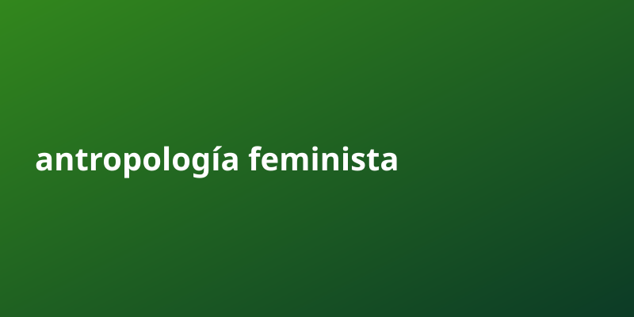

Antropología feminista | Antropología feminista

Cada dia surgen nuevas oportunidades en torno a antropología feminista. Aqui tienes lo esencial para aprovecharlas.
La antropología feminista es una aproximación a la antropología desde cuatro campos de estudio que a partir de la teoría feminista busca reducir sesgos en las investigaciones, las prácticas de contratación en el área y en la producción académica de conocimiento. A pesar de que las feministas practican la antropología cultural desde su creación, no fue hasta la década de 1970 que la antropología feminista fue reconocida formalmente como una subdisciplina de la antropología. Desde entonces, ha desarrollado su propia subsección en la Asociación Antropológica Americana, la Asociación de Antropología Feminista, y su propia publicación, Voces, que ya no existe.
Puntos clave sobre antropología feminista
- La clave esta en la consistencia. Los sistemas que funcionan se apoyan en procesos repetibles y medibles, no en suerte.
- La automatizacion permite escalar sin aumentar tu tiempo. Una vez configurado, el flujo trabaja por ti 24/7.
- La informacion publica gratuita es una mina de oro subestimada. Saber recopilarla y empaquetarla es una habilidad rentable.
Por que importa
La clave esta en la consistencia. Los sistemas que funcionan se apoyan en procesos repetibles y medibles, no en suerte. La automatizacion permite escalar sin aumentar tu tiempo. Una vez configurado, el flujo trabaja por ti 24/7.
Guia paso a paso
- Investiga bien el tema de antropología feminista usando fuentes publicas gratuitas.
- Organiza la informacion en puntos claros y accionables.
- Crea un sistema que publique de forma automatica y constante.
- Revisa metricas y elimina lo que no aporta valor.
- Escala lo que funciona y delega el resto a la automatizacion.
Errores comunes a evitar
- Quierer hacerlo todo manualmente en lugar de automatizar.
- Ignorar la consistencia y publicar solo cuando hay tiempo.
- Copiar sin curador: el valor esta en organizar y entregar claridad.
- No medir resultados y repetir lo que no funciona.
- Subestimar el poder de la frecuencia y el volumen compuesto.
Preguntas frecuentes
¿Cuanto tiempo tarda en verse resultado con antropología feminista?
Depende de la constancia; con publicacion automatica, el efecto compuesto aparece semana a semana.
¿Necesito invertir dinero para empezar?
No. Con fuentes publicas y automatizacion puedes arrancar sin capital inicial.
¿Por que la frecuencia importa tanto?
Porque cada pieza suma alcance acumulado; el volumen constante vence a la perfeccion esporadica.
¿Como diferencio mi contenido?
Curado, claridad y formato: empaquetar lo publico en algo util y facil de consumir.
Checklist rapida
- Define una meta clara de antropología feminista y un plazo realista.
- Automatiza la parte repetitiva para no depender de tu tiempo.
- Mide resultados cada ciclo y ajusta lo que no funcione.
- Reutiliza contenido publico bien curado en vez de crear desde cero.
- Mantén consistencia: el volumen compuesto es la clave del crecimiento.
Conclusion
No esperes la situacion perfecta. Un ecosistema funcionando vale mas que diez planes en papel.
Herramienta recomendada para empezar: https://example.com/?ref=AUTONICHE